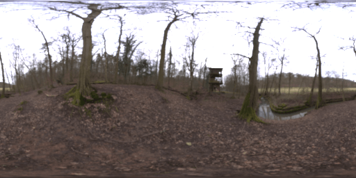

<!DOCTYPE html>
<html lang="en">
<!--Remember to upload document to a https: page and not http as there are security risks that will refrain the page access otherwise-->

    
    
    
    <head>
        <meta charset="utf-8" />
        <meta name="viewport" content="width=device-width, initial-scale=1.0">
        <title>Ned Kelly Experiment</title>
        <script src="js/custom.js"></script>
        
        <!-- A-Frame library + Effects -->
        <script src="https://aframe.io/releases/1.0.4/aframe.min.js"></script>
        <script src="https://cdn.jsdelivr.net/gh/donmccurdy/aframe-extras@v6.1.0/dist/aframe-extras.min.js"></script>
        <script src="js/A-Frame/aframe-rain.min.js"></script> 
        <script src="js/custom.js"></script>     
    </head>
    
    <body>
        <a-scene 
                 stats 
                 nedkelly-logic 
                 rain = "splash: false"
                 fog = "type: exponential; 
                        color: #22251e; 
                        density: 0.1" 
                 renderer="alpha: false;">
            
            <!-- Asset management system. -->
            <a-assets>
                <a-asset-item id="nedkelly-gtlf" src="models/nedKelly.glb" response-type="arraybuffer"></a-asset-item>
                <a-asset-item id="environment-gtlf" src="models/lake-environment.glb" response-type="arraybuffer"></a-asset-item>
                <a-asset-item id="water-gtlf" src="models/water.glb" response-type="arraybuffer"></a-asset-item>
                <!--  -->
            </a-assets>
            
            
            <!-- Camera Settings. -->            
            <a-entity id="camera" position="0 -1 5.9">
                <a-camera user-height=2.6></a-camera> 
            </a-entity>

            <!-- Lighting -->
            <a-light type="hemisphere" intensity="0.4"></a-light>
            <a-light 
                     id="moon" light="distance: 12.71; decay: 0.48" 
                     type="spot" 
                     intensity="0.4" 
                     rotation="180 0 0" 
                     position="0 5.939 -6.617" 
                     penumbra="1">
            </a-light>
            <a-sky  color="#22251e"></a-sky>
            
   
            
            <a-entity  
                id="nedkelly"  
                gltf-model="#nedkelly-gtlf" 
                animation-mixer
                position="-1.353 -1.623 4"       
                scale="0.01 0.01 0.01"
                rotation="0 180 0">
            </a-entity>
            
            <a-entity
                id="environment" 
                gltf-model="#environment-gtlf"
                rotation="0 90 0"
                      scale="5.5 5.5 5.5">
            </a-entity>
            <a-entity
                id="water" position="-0.10498 -0.04658 0" scale="5.5 5.5 5.5" rotation="0 90 0" 
                gltf-model="#water-gtlf" 
                animation-mixer>
            </a-entity>
            
            
        </a-scene>
    </body>
    
    
</html>

